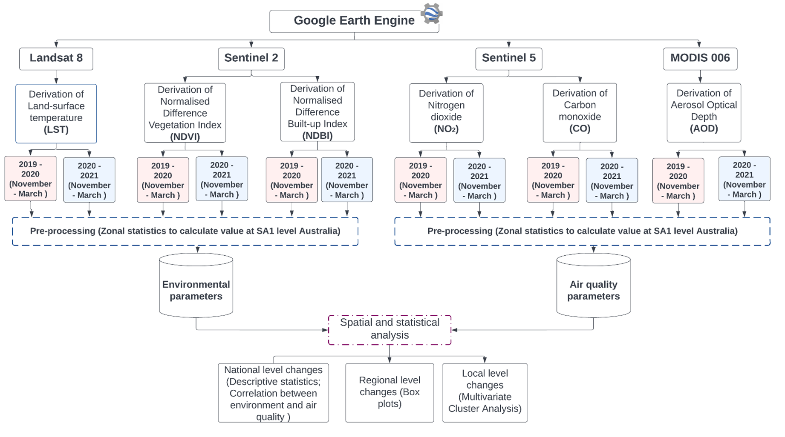

The research aims to uncover the synoptic changes on the environmental and air quality parameters induced by the first year COVID-19 pandemic lockdown in Australia.
1.Derive nationwide fine scale temperature, landuse landcover and air quality datasets from Google Earth engine (GEE) cloud platform.
2.Analyse the spatial-temporal changes of the parameters before and after COVID-19 outbreak in Australia at national and regional level.
3.Identify local areas and clusters (SA1s) with significant environmental and air quality changes using spatial machine learning.

Note : Hover or click to popup the values